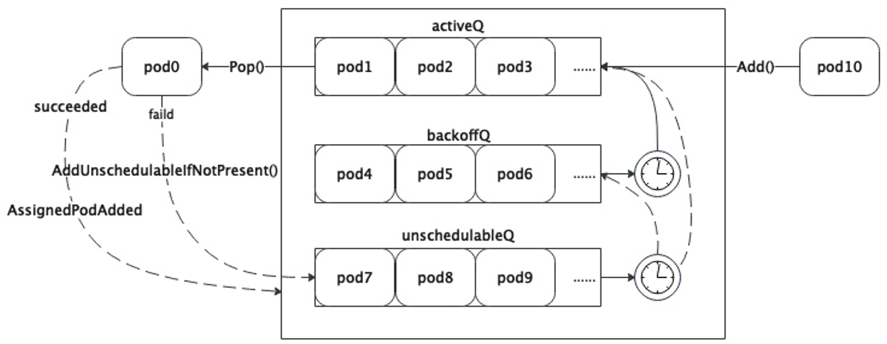

Scheduler创建流程与调度队列
1. 组件的创建
在Kubernetes的各个组件中，创建的流程都是类似的，如调度器的创建入口在cmd/kube-scheduler/scheduler.go路径下。
func main() {
// 创建
command := app.NewSchedulerCommand()
// 启动
code := cli.Run(command)
os.Exit(code)
}
创建的实现如下，我们只需要关注cobra.Command中RunE的实现，这部分代码集中在cmd/kube-scheduler/app/server.go中。
func NewSchedulerCommand(registryOptions ...Option) *cobra.Command {
// explicitly register (if not already registered) the kube effective version and feature gate in DefaultComponentGlobalsRegistry,
// which will be used in NewOptions.
_, _ = featuregate.DefaultComponentGlobalsRegistry.ComponentGlobalsOrRegister(
featuregate.DefaultKubeComponent, utilversion.DefaultBuildEffectiveVersion(), utilfeature.DefaultMutableFeatureGate)
// 初始化组件基本配置 返回一个Options结构体的指针
opts := options.NewOptions()
cmd := &cobra.Command{
Use: "kube-scheduler",
// 持久化的PreRunE钩子函数
PersistentPreRunE: func(*cobra.Command, []string) error {
// makes sure feature gates are set before RunE.
return opts.ComponentGlobalsRegistry.Set()
},
// 主要执行函数 关注这个函数即可
RunE: func(cmd *cobra.Command, args []string) error {
return runCommand(cmd, opts, registryOptions...)
},
// 遍历命令行的args 如果arg长度大于0报错
// scheduler不支持传入args
Args: func(cmd *cobra.Command, args []string) error {
for _, arg := range args {
if len(arg) > 0 {
return fmt.Errorf("%q does not take any arguments, got %q", cmd.CommandPath(), args)
}
}
return nil
},
}
nfs := opts.Flags
verflag.AddFlags(nfs.FlagSet("global"))
globalflag.AddGlobalFlags(nfs.FlagSet("global"), cmd.Name(), logs.SkipLoggingConfigurationFlags())
fs := cmd.Flags()
for _, f := range nfs.FlagSets {
fs.AddFlagSet(f)
}
cols, _, _ := term.TerminalSize(cmd.OutOrStdout())
cliflag.SetUsageAndHelpFunc(cmd, *nfs, cols)
if err := cmd.MarkFlagFilename("config", "yaml", "yml", "json"); err != nil {
klog.Background().Error(err, "Failed to mark flag filename")
}
return cmd
}
1.1. Options结构体
看一下Options结构体的定义，在路径cmd/kube-scheduler/app/options/options.go下。
// Options has all the params needed to run a Scheduler
type Options struct {
// 调度器核心配置
ComponentConfig *kubeschedulerconfig.KubeSchedulerConfiguration
// 调度器与客户端通信配置
SecureServing *apiserveroptions.SecureServingOptionsWithLoopback
// 认证配置
Authentication *apiserveroptions.DelegatingAuthenticationOptions
// 授权配置
Authorization *apiserveroptions.DelegatingAuthorizationOptions
// 性能指标配置
Metrics *metrics.Options
// 日志记录器配置
Logs *logs.Options
// 将要弃用的选项
Deprecated *DeprecatedOptions
// 选举配置
LeaderElection *componentbaseconfig.LeaderElectionConfiguration
// 调度器配置文件路径
ConfigFile string
// 配置写入路径
WriteConfigTo string
// api server地址
Master string
// 特性门控配置
ComponentGlobalsRegistry featuregate.ComponentGlobalsRegistry
// 存储启动flag参数
Flags *cliflag.NamedFlagSets
}
关键函数runCommand，在这个函数中通过Setup()函数生成了CompletedConfig和Scheduler类型的实例cc和sched，然后使用这两个重要对象作为参数启动调度器。
func runCommand(cmd *cobra.Command, opts *options.Options, registryOptions ...Option) error {
verflag.PrintAndExitIfRequested()
fg := opts.ComponentGlobalsRegistry.FeatureGateFor(featuregate.DefaultKubeComponent)
// Activate logging as soon as possible, after that
// show flags with the final logging configuration.
if err := logsapi.ValidateAndApply(opts.Logs, fg); err != nil {
fmt.Fprintf(os.Stderr, "%v\n", err)
os.Exit(1)
}
cliflag.PrintFlags(cmd.Flags())
// 通常创建一个新的上下文时会从context.Background()开始
ctx, cancel := context.WithCancel(context.Background())
defer cancel()
go func() {
stopCh := server.SetupSignalHandler()
<-stopCh
cancel()
}()
// 创建完整配置和调度器实例
cc, sched, err := Setup(ctx, opts, registryOptions...)
if err != nil {
return err
}
// add feature enablement metrics
fg.(featuregate.MutableFeatureGate).AddMetrics()
// 启动调度器
return Run(ctx, cc, sched)
}
1.2. Setup函数
Setup()函数的实现如下，其中scheduler.New是调度器实例的创建点。
func Setup(ctx context.Context, opts *options.Options, outOfTreeRegistryOptions ...Option) (*schedulerserverconfig.CompletedConfig, *scheduler.Scheduler, error) {
// 创建cfg并注入到opt中
if cfg, err := latest.Default(); err != nil {
return nil, nil, err
} else {
opts.ComponentConfig = cfg
}
// 校验
if errs := opts.Validate(); len(errs) > 0 {
return nil, nil, utilerrors.NewAggregate(errs)
}
// 生成Config
// 其中包括两个客户端 一个用于对接api server 一个专门处理事件用于事件广播器中
// 创建informer工厂和Leader选举配置
c, err := opts.Conf
ig(ctx)
if err != nil {
return nil, nil, err
}
// 把Config类型转换成CompletedConfig
cc := c.Complete()
outOfTreeRegistry := make(runtime.Registry)
for _, option := range outOfTreeRegistryOptions {
if err := option(outOfTreeRegistry); err != nil {
return nil, nil, err
}
}
recorderFactory := getRecorderFactory(&cc)
completedProfiles := make([]kubeschedulerconfig.KubeSchedulerProfile, 0)
// 根据CompletedConfig创建调度器实例
sched, err := scheduler.New(ctx,
cc.Client,
cc.InformerFactory,
cc.DynInformerFactory,
recorderFactory,
scheduler.WithComponentConfigVersion(cc.ComponentConfig.TypeMeta.APIVersion),
scheduler.WithKubeConfig(cc.KubeConfig),
scheduler.WithProfiles(cc.ComponentConfig.Profiles...),
scheduler.WithPercentageOfNodesToScore(cc.ComponentConfig.PercentageOfNodesToScore),
scheduler.WithFrameworkOutOfTreeRegistry(outOfTreeRegistry),
scheduler.WithPodMaxBackoffSeconds(cc.ComponentConfig.PodMaxBackoffSeconds),
scheduler.WithPodInitialBackoffSeconds(cc.ComponentConfig.PodInitialBackoffSeconds),
scheduler.WithPodMaxInUnschedulablePodsDuration(cc.PodMaxInUnschedulablePodsDuration),
scheduler.WithExtenders(cc.ComponentConfig.Extenders...),
scheduler.WithParallelism(cc.ComponentConfig.Parallelism),
scheduler.WithBuildFrameworkCapturer(func(profile kubeschedulerconfig.KubeSchedulerProfile) {
// Profiles are processed during Framework instantiation to set default plugins and configurations. Capturing them for logging
completedProfiles = append(completedProfiles, profile)
}),
)
if err != nil {
return nil, nil, err
}
if err := options.LogOrWriteConfig(klog.FromContext(ctx), opts.WriteConfigTo, &cc.ComponentConfig, completedProfiles); err != nil {
return nil, nil, err
}
// 返回配置和实例
return &cc, sched, nil
1.3. New函数
在New()函数中，完整地创建了一个调度器实例以及相关组件。
func New(ctx context.Context,
client clientset.Interface,
informerFactory informers.SharedInformerFactory,
dynInformerFactory dynamicinformer.DynamicSharedInformerFactory,
recorderFactory profile.RecorderFactory,
opts ...Option) (*Scheduler, error) {
logger := klog.FromContext(ctx)
stopEverything := ctx.Done()
options := defaultSchedulerOptions
for _, opt := range opts {
opt(&options)
}
if options.applyDefaultProfile {
var versionedCfg configv1.KubeSchedulerConfiguration
scheme.Scheme.Default(&versionedCfg)
cfg := schedulerapi.KubeSchedulerConfiguration{}
if err := scheme.Scheme.Convert(&versionedCfg, &cfg, nil); err != nil {
return nil, err
}
options.profiles = cfg.Profiles
}
// registry是注册的in-tree插件列表
registry := frameworkplugins.NewInTreeRegistry()
// 合并in-tree和out-of-tree列表
if err := registry.Merge(options.frameworkOutOfTreeRegistry); err != nil {
return nil, err
}
metrics.Register()
extenders, err := buildExtenders(logger, options.extenders, options.profiles)
if err != nil {
return nil, fmt.Errorf("couldn't build extenders: %w", err)
}
// 通过Informer工厂 创建podLister和nodeLister
podLister := informerFactory.Core().V1().Pods().Lister()
nodeLister := informerFactory.Core().V1().Nodes().Lister()
// 初始化全局快照
snapshot := internalcache.NewEmptySnapshot()
metricsRecorder := metrics.NewMetricsAsyncRecorder(1000, time.Second, stopEverything)
// waitingPods holds all the pods that are in the scheduler and waiting in the permit stage
waitingPods := frameworkruntime.NewWaitingPodsMap()
var resourceClaimCache *assumecache.AssumeCache
var draManager framework.SharedDRAManager
// 如果动态资源分配的特性门控开启 创建资源申请的Informmer Cache和DRA Manager
if utilfeature.DefaultFeatureGate.Enabled(features.DynamicResourceAllocation) {
resourceClaimInformer := informerFactory.Resource().V1beta1().ResourceClaims().Informer()
resourceClaimCache = assumecache.NewAssumeCache(logger, resourceClaimInformer, "ResourceClaim", "", nil)
draManager = dynamicresources.NewDRAManager(ctx, resourceClaimCache, informerFactory)
}
// 根据上面的参数 创建一个完整的Profile
profiles, err := profile.NewMap(ctx, options.profiles, registry, recorderFactory,
frameworkruntime.WithComponentConfigVersion(options.componentConfigVersion),
frameworkruntime.WithClientSet(client),
frameworkruntime.WithKubeConfig(options.kubeConfig),
frameworkruntime.WithInformerFactory(informerFactory),
frameworkruntime.WithSharedDRAManager(draManager),
frameworkruntime.WithSnapshotSharedLister(snapshot),
frameworkruntime.WithCaptureProfile(frameworkruntime.CaptureProfile(options.frameworkCapturer)),
frameworkruntime.WithParallelism(int(options.parallelism)),
frameworkruntime.WithExtenders(extenders),
frameworkruntime.WithMetricsRecorder(metricsRecorder),
frameworkruntime.WithWaitingPods(waitingPods),
)
if err != nil {
return nil, fmt.Errorf("initializing profiles: %v", err)
}
if len(profiles) == 0 {
return nil, errors.New("at least one profile is required")
}
// 调度队列的相关配置
preEnqueuePluginMap := make(map[string][]framework.PreEnqueuePlugin)
queueingHintsPerProfile := make(internalqueue.QueueingHintMapPerProfile)
var returnErr error
for profileName, profile := range profiles {
preEnqueuePluginMap[profileName] = profile.PreEnqueuePlugins()
queueingHintsPerProfile[profileName], err = buildQueueingHintMap(ctx, profile.EnqueueExtensions())
if err != nil {
returnErr = errors.Join(returnErr, err)
}
}
if returnErr != nil {
return nil, returnErr
}
// 创建调度队列实例 PriorityQueue实例主要包括了activeQ/podBackoffQ/unschedulablePods、nsLister和nominator
podQueue := internalqueue.NewSchedulingQueue(
profiles[options.profiles[0].SchedulerName].QueueSortFunc(),
informerFactory,
internalqueue.WithPodInitialBackoffDuration(time.Duration(options.podInitialBackoffSeconds)*time.Second),
internalqueue.WithPodMaxBackoffDuration(time.Duration(options.podMaxBackoffSeconds)*time.Second),
internalqueue.WithPodLister(podLister),
internalqueue.WithPodMaxInUnschedulablePodsDuration(options.podMaxInUnschedulablePodsDuration),
internalqueue.WithPreEnqueuePluginMap(preEnqueuePluginMap),
internalqueue.WithQueueingHintMapPerProfile(queueingHintsPerProfile),
internalqueue.WithPluginMetricsSamplePercent(pluginMetricsSamplePercent),
internalqueue.WithMetricsRecorder(*metricsRecorder),
)
// 用创建出来的PQ给framework实例设置PodNominator和PodActivator
for _, fwk := range profiles {
fwk.SetPodNominator(podQueue)
fwk.SetPodActivator(podQueue)
}
// 创建调度器缓存
schedulerCache := internalcache.New(ctx, durationToExpireAssumedPod)
// cache debugger的作用包括比较Lister和Cache.Snapshot的数据一致性和记录缓存/调度队列信息
debugger := cachedebugger.New(nodeLister, podLister, schedulerCache, podQueue)
debugger.ListenForSignal(ctx)
// 实例创建
sched := &Scheduler{
Cache: schedulerCache,
client: client,
nodeInfoSnapshot: snapshot,
percentageOfNodesToScore: options.percentageOfNodesToScore,
Extenders: extenders,
StopEverything: stopEverything,
SchedulingQueue: podQueue,
Profiles: profiles,
logger: logger,
}
sched.NextPod = podQueue.Pop
sched.applyDefaultHandlers()
// 注册事件处理器
if err = addAllEventHandlers(sched, informerFactory, dynInformerFactory, resourceClaimCache, unionedGVKs(queueingHintsPerProfile)); err != nil {
return nil, fmt.Errorf("adding event handlers: %w", err)
}
return sched, nil
}
2. 调度器实例的启动
Run()函数位于cmd/kube-scheduler/app/server.go，和runCommand()函数在同一路径下，完整过程包括：
- 先启动日志记录器，输出
Info级别的环境信息日志; - 根据
componentconfig注册配置configz，类型是Config指针; - 启动事件广播器;
- 初始化健康检查设置，包括
WatchDog和Shutdown检查器; - 检查是否为
Leader; - 创建同步处理健康检查器;
- 协调
Leader选举; - 启动健康检查器Server;
- 启动所有
Informer并等待同步; - 运行调度器实例;
func Run(ctx context.Context, cc *schedulerserverconfig.CompletedConfig, sched *scheduler.Scheduler) error {
logger := klog.FromContext(ctx)
// To help debugging, immediately log version
logger.Info("Starting Kubernetes Scheduler", "version", utilversion.Get())
logger.Info("Golang settings", "GOGC", os.Getenv("GOGC"), "GOMAXPROCS", os.Getenv("GOMAXPROCS"), "GOTRACEBACK", os.Getenv("GOTRACEBACK"))
// Configz registration.
if cz, err := configz.New("componentconfig"); err != nil {
return fmt.Errorf("unable to register configz: %s", err)
} else {
cz.Set(cc.ComponentConfig)
}
// Start events processing pipeline.
cc.EventBroadcaster.StartRecordingToSink(ctx.Done())
defer cc.EventBroadcaster.Shutdown()
// Setup healthz checks.
var checks, readyzChecks []healthz.HealthChecker
if cc.ComponentConfig.LeaderElection.LeaderElect {
checks = append(checks, cc.LeaderElection.WatchDog)
readyzChecks = append(readyzChecks, cc.LeaderElection.WatchDog)
}
readyzChecks = append(readyzChecks, healthz.NewShutdownHealthz(ctx.Done()))
waitingForLeader := make(chan struct{})
isLeader := func() bool {
select {
case _, ok := <-waitingForLeader:
// if channel is closed, we are leading
return !ok
default:
// channel is open, we are waiting for a leader
return false
}
}
handlerSyncReadyCh := make(chan struct{})
handlerSyncCheck := healthz.NamedCheck("sched-handler-sync", func(_ *http.Request) error {
select {
case <-handlerSyncReadyCh:
return nil
default:
}
return fmt.Errorf("waiting for handlers to sync")
})
readyzChecks = append(readyzChecks, handlerSyncCheck)
if cc.LeaderElection != nil && utilfeature.DefaultFeatureGate.Enabled(kubefeatures.CoordinatedLeaderElection) {
binaryVersion, err := semver.ParseTolerant(featuregate.DefaultComponentGlobalsRegistry.EffectiveVersionFor(featuregate.DefaultKubeComponent).BinaryVersion().String())
if err != nil {
return err
}
emulationVersion, err := semver.ParseTolerant(featuregate.DefaultComponentGlobalsRegistry.EffectiveVersionFor(featuregate.DefaultKubeComponent).EmulationVersion().String())
if err != nil {
return err
}
// Start lease candidate controller for coordinated leader election
leaseCandidate, waitForSync, err := leaderelection.NewCandidate(
cc.Client,
metav1.NamespaceSystem,
cc.LeaderElection.Lock.Identity(),
"kube-scheduler",
binaryVersion.FinalizeVersion(),
emulationVersion.FinalizeVersion(),
coordinationv1.OldestEmulationVersion,
)
if err != nil {
return err
}
readyzChecks = append(readyzChecks, healthz.NewInformerSyncHealthz(waitForSync))
go leaseCandidate.Run(ctx)
}
// Start up the healthz server.
if cc.SecureServing != nil {
handler := buildHandlerChain(newHealthEndpointsAndMetricsHandler(&cc.ComponentConfig, cc.InformerFactory, isLeader, checks, readyzChecks), cc.Authentication.Authenticator, cc.Authorization.Authorizer)
// TODO: handle stoppedCh and listenerStoppedCh returned by c.SecureServing.Serve
if _, _, err := cc.SecureServing.Serve(handler, 0, ctx.Done()); err != nil {
// fail early for secure handlers, removing the old error loop from above
return fmt.Errorf("failed to start secure server: %v", err)
}
}
startInformersAndWaitForSync := func(ctx context.Context) {
// Start all informers.
cc.InformerFactory.Start(ctx.Done())
// DynInformerFactory can be nil in tests.
if cc.DynInformerFactory != nil {
cc.DynInformerFactory.Start(ctx.Done())
}
// Wait for all caches to sync before scheduling.
cc.InformerFactory.WaitForCacheSync(ctx.Done())
// DynInformerFactory can be nil in tests.
if cc.DynInformerFactory != nil {
cc.DynInformerFactory.WaitForCacheSync(ctx.Done())
}
// Wait for all handlers to sync (all items in the initial list delivered) before scheduling.
if err := sched.WaitForHandlersSync(ctx); err != nil {
logger.Error(err, "waiting for handlers to sync")
}
close(handlerSyncReadyCh)
logger.V(3).Info("Handlers synced")
}
if !cc.ComponentConfig.DelayCacheUntilActive || cc.LeaderElection == nil {
startInformersAndWaitForSync(ctx)
}
// If leader election is enabled, runCommand via LeaderElector until done and exit.
if cc.LeaderElection != nil {
if utilfeature.DefaultFeatureGate.Enabled(kubefeatures.CoordinatedLeaderElection) {
cc.LeaderElection.Coordinated = true
}
cc.LeaderElection.Callbacks = leaderelection.LeaderCallbacks{
OnStartedLeading: func(ctx context.Context) {
close(waitingForLeader)
if cc.ComponentConfig.DelayCacheUntilActive {
logger.Info("Starting informers and waiting for sync...")
startInformersAndWaitForSync(ctx)
logger.Info("Sync completed")
}
sched.Run(ctx)
},
OnStoppedLeading: func() {
select {
case <-ctx.Done():
// We were asked to terminate. Exit 0.
logger.Info("Requested to terminate, exiting")
os.Exit(0)
default:
// We lost the lock.
logger.Error(nil, "Leaderelection lost")
klog.FlushAndExit(klog.ExitFlushTimeout, 1)
}
},
}
leaderElector, err := leaderelection.NewLeaderElector(*cc.LeaderElection)
if err != nil {
return fmt.Errorf("couldn't create leader elector: %v", err)
}
leaderElector.Run(ctx)
return fmt.Errorf("lost lease")
}
// Leader election is disabled, so runCommand inline until done.
close(waitingForLeader)
sched.Run(ctx)
return fmt.Errorf("finished without leader elect")
}
3. 调度器运行原理
上面已经说到了创建完成后直接运行调度器实例，来看一下调度器的启动到底都包含哪些步骤，代码路径pkg/scheduler/scheduler.go。
Run()函数的实现非常简单，第一步先启动日志记录器，然后启动调度队列和调度循环，然后等待ctx.Done()信号使线程阻塞，如果收到了ctx.Done()信号就对调度队列和调度插件执行Close()操作释放资源，其中ScheduleOne是在一个协程中启动的，原因是为了避免在没有Pod需要调度时挂起状态的ScheduleOne阻塞了后续的信号接收，导致调度队列无法关闭造成的死锁情况。
其中涉及到一个核心结构SchedulingQueue和核心方法ScheduleOne，先抛出一个官方文档中的流程图，在后面会进行详细说明。

// Run begins watching and scheduling. It starts scheduling and blocked until the context is done.
func (sched *Scheduler) Run(ctx context.Context) {
logger := klog.FromContext(ctx)
// 启动调度队列
sched.SchedulingQueue.Run(logger)
// 启动调度循环
go wait.UntilWithContext(ctx, sched.ScheduleOne, 0)
// 阻塞 等待关闭信号
<-ctx.Done()
// 关闭调度队列
sched.SchedulingQueue.Close()
// 关闭调度插件
err := sched.Profiles.Close()
if err != nil {
logger.Error(err, "Failed to close plugins")
}
}
4. 调度队列详解
上一节说到启动调度器包括：启动调度队列和启动调度循环，在此详细解释调度队列的实现，如果不关注调度队列的实现可以先跳过本节。
4.1. Pod在队列中的类型
调度队列中的Pod结构是QueuedPodInfo，它是由PodInfo加上了Pod在队列中的一些属性，包括入队时间戳、尝试次数、首次入队时间和导致调度失败的插件集合所共同组成，类型定义如下，在路径pkg/scheduler/framework/types.go下。
type QueuedPodInfo struct {
// Pod信息
*PodInfo
// 本次入队时间
Timestamp time.Time
// 失败次数
Attempts int
// 首次入队时间
InitialAttemptTimestamp *time.Time
// 导致Pod以Unschedulable或UnschedulableAndUnresolvable状态返回的插件列表
// 会导致这两种状态的插件类型包括PreFilter, Filter, Reserve, Permit, PreBind.
UnschedulablePlugins sets.Set[string]
// 导致Pod以Pending状态返回的插件列表
PendingPlugins sets.Set[string]
// Whether the Pod is scheduling gated (by PreEnqueuePlugins) or not.
Gated bool
}
PodInfo结构体是调度过程中最常见的数据类型，其中包含Pod类型和软/硬亲和/反亲和信息。
type PodInfo struct {
Pod *v1.Pod
RequiredAffinityTerms []AffinityTerm
RequiredAntiAffinityTerms []AffinityTerm
PreferredAffinityTerms []WeightedAffinityTerm
PreferredAntiAffinityTerms []WeightedAffinityTerm
}
4.2. 调度队列
调度队列SchedulingQueue是一个接口类型
type SchedulingQueue interface {
// 调度过程中可能需要同步Pod状态给提名器 和队列没有直接关系
framework.PodNominator
// 向队列中添加待调度的Pod
Add(logger klog.Logger, pod *v1.Pod)
// 添加Pod到ActiveQ
Activate(logger klog.Logger, pods map[string]*v1.Pod)
// 把无法调度的Pod加回调度队列 和schedulingHint策略相关
AddUnschedulableIfNotPresent(logger klog.Logger, pod *framework.QueuedPodInfo, podSchedulingCycle int64) error
// 调度周期 每Pop一次算一个周期
SchedulingCycle() int64
// 从队头弹出Pod
Pop(logger klog.Logger) (*framework.QueuedPodInfo, error)
// 标记一个Pod处理完成
Done(types.UID)
// 更新Pod
Update(logger klog.Logger, oldPod, newPod *v1.Pod)
// 删除Pod
Delete(pod *v1.Pod)
// 把所有不可调度Pod移动到ActiveQ或BackoffQ
MoveAllToActiveOrBackoffQueue(logger klog.Logger, event framework.ClusterEvent, oldObj, newObj interface{}, preCheck PreEnqueueCheck)
// 关联Pod被添加
AssignedPodAdded(logger klog.Logger, pod *v1.Pod)
// 关联Pod被更新
AssignedPodUpdated(logger klog.Logger, oldPod, newPod *v1.Pod, event framework.ClusterEvent)
// 关闭调度队列
Close()
// 启动调度队列
Run(logger klog.Logger)
}
4.3. 优先队列
在Kubernetes中实现了SchedulingQueue的类型是PriorityQueue优先队列，从它直接实现了SchedulingQueue接口，又通过SchedulingQueue间接实现了PodActivator，PodNominator两种接口，以上可以看出优先队列具有的能力包括：调度队列的基本能力、把一个Pod加入ActiveQ的能力和处理NominatedPod的能力。
type PriorityQueue struct {
// 提名器
*nominator
// 接收停止信号的通道
stop chan struct{}
// 时钟
clock clock.Clock
// 锁
lock sync.RWMutex
// Pod初始退避时长
podInitialBackoffDuration time.Duration
// Pod最大退避时长
podMaxBackoffDuration time.Duration
// Pod在unschedulablePods中的最大时长
podMaxInUnschedulablePodsDuration time.Duration
// ActiveQ
activeQ activeQueuer
// BackoffQ
podBackoffQ *heap.Heap[*framework.QueuedPodInfo]
// unschedulablePods
unschedulablePods *UnschedulablePods
// preEnqueue插件列表
preEnqueuePluginMap map[string][]framework.PreEnqueuePlugin
// key是profil value是QueueingHintFunction列表
queueingHintMap QueueingHintMapPerProfile
// 命名空间Lister
nsLister listersv1.NamespaceLister
// 指标记录器
metricsRecorder metrics.MetricAsyncRecorder
// 插件指标采样百分比
pluginMetricsSamplePercent int
// SchedulingQueueHint特性门控开关
isSchedulingQueueHintEnabled bool
}
优先队列的实现
了解过调度队列的话，一定会听说过存在着三种队列：ActiveQ，BackoffQ，unschedulablePods。
首先通过PriorityQueue的结构，可以看到ActiveQ和BackoffQ底层都是heap.Heap，来看一下Heap到底是什么。
泛型结构体Heap的定义位于pkg/scheduler/backend/heap/heap.go中，其中只包括自定义堆中元素data和指标记录器。
type Heap[T any] struct {
// data stores objects and has a queue that keeps their ordering according
// to the heap invariant.
data *data[T]
// metricRecorder updates the counter when elements of a heap get added or
// removed, and it does nothing if it's nil
metricRecorder metrics.MetricRecorder
}
再看堆元素data是如何实现的，堆的设计天然维护了其中元素的顺序，所以ActiveQ和BackoffQ实际上是两个优先队列。
type data[T any] struct {
// 存储堆中元素的表 用于快速索引
items map[string]*heapItem[T]
// 优先队列 维护了元素的顺序
queue []string
// 生成item key的规则
keyFunc KeyFunc[T]
// 堆元素排序的规则
lessFunc LessFunc[T]
}
再来看UnschedulablePods类型，可以看到这个队列实际只是一个Map结构，其中的元素不具有顺序，严格来说不是一个队列。
type UnschedulablePods struct {
// 记录Pod信息的表 key是Pod的full-name value是指针
podInfoMap map[string]*framework.QueuedPodInfo
// key生成函数
keyFunc func(*v1.Pod) string
// 指标记录器
unschedulableRecorder, gatedRecorder metrics.MetricRecorder
}
// keyFunc函数的实现 实际上就是Pod名称和namespace的拼接
func GetPodFullName(pod *v1.Pod) string {
return pod.Name + "_" + pod.Namespace
}
4.4. 调度队列的几种方法
Run
Run()方法的作用是启动两个goroutine，一个goroutine每秒执行一次把BackoffQ中超过退避时间的Pod移动到ActiveQ中，另一个goroutine每30秒执行一次把unschedulablePods中已到期的Pod根据一定的策略刷新其在调度队列中的位置。
// Run starts the goroutine to pump from podBackoffQ to activeQ
func (p *PriorityQueue) Run(logger klog.Logger) {
// 启动周期任务goroutine 把BackoffQ中完成退避的Pod移动到ActiveQ
go wait.Until(func() {
p.flushBackoffQCompleted(logger)
}, 1.0*time.Second, p.stop)
// 启动周期任务goroutine 把unschedulablePods中已到期的Pod移动到ActiveQ/BackoffQ
go wait.Until(func() {
p.flushUnschedulablePodsLeftover(logger)
}, 30*time.Second, p.stop)
}
// flushBackoffQCompleted Moves all pods from backoffQ which have completed backoff in to activeQ
func (p *PriorityQueue) flushBackoffQCompleted(logger klog.Logger) {
p.lock.Lock()
defer p.lock.Unlock()
// 标志位 表示是否有Pod被移动
activated := false
for {
// 看队首是否有元素 如果空队列直接退出
pInfo, ok := p.podBackoffQ.Peek()
if !ok || pInfo == nil {
break
}
pod := pInfo.Pod
// 比较backoffTime即(Timestamp+duration)和当前时间
//没完成退避就退出 因为堆顶元素是退避完成时间最早的
if p.isPodBackingoff(pInfo) {
break
}
_, err := p.podBackoffQ.Pop()
if err != nil {
logger.Error(err, "Unable to pop pod from backoff queue despite backoff completion", "pod", klog.KObj(pod))
break
}
// 移动该Pod到ActiveQ
if added := p.moveToActiveQ(logger, pInfo, framework.BackoffComplete); added {
// 更新标志位
activated = true
}
}
if activated {
// 广播唤醒所有等待对ActiveQ执行Pop的goroutine
p.activeQ.broadcast()
}
}
func (p *PriorityQueue) moveToActiveQ(logger klog.Logger, pInfo *framework.QueuedPodInfo, event string) bool {
gatedBefore := pInfo.Gated
// 运行PreEnqueue插件
pInfo.Gated = !p.runPreEnqueuePlugins(context.Background(), pInfo)
// 添加到ActiveQ的标志位
added := false
p.activeQ.underLock(func(unlockedActiveQ unlockedActiveQueuer) {
// 如果PreEnqueue插件运行没通过 加到unschedulablePods中
if pInfo.Gated {
// Add the Pod to unschedulablePods if it's not passing PreEnqueuePlugins.
if unlockedActiveQ.Has(pInfo) {
return
}
if p.podBackoffQ.Has(pInfo) {
return
}
p.unschedulablePods.addOrUpdate(pInfo)
return
}
if pInfo.InitialAttemptTimestamp == nil {
now := p.clock.Now()
pInfo.InitialAttemptTimestamp = &now
}
// 运行通过了就加到ActiveQ
unlockedActiveQ.AddOrUpdate(pInfo)
// 更新标志位
added = true
// 从BackoffQ和unschedulablePods删除 保证Pod信息在队列中的唯一性
p.unschedulablePods.delete(pInfo.Pod, gatedBefore)
_ = p.podBackoffQ.Delete(pInfo)
logger.V(5).Info("Pod moved to an internal scheduling queue", "pod", klog.KObj(pInfo.Pod), "event", event, "queue", activeQ)
metrics.SchedulerQueueIncomingPods.WithLabelValues("active", event).Inc()
if event == framework.EventUnscheduledPodAdd.Label() || event == framework.EventUnscheduledPodUpdate.Label() {
// 置空Pod的提名节点
p.AddNominatedPod(logger, pInfo.PodInfo, nil)
}
})
return added
}
// flushUnschedulablePodsLeftover moves pods which stay in unschedulablePods
// longer than podMaxInUnschedulablePodsDuration to backoffQ or activeQ.
func (p *PriorityQueue) flushUnschedulablePodsLeftover(logger klog.Logger) {
p.lock.Lock()
defer p.lock.Unlock()
var podsToMove []*framework.QueuedPodInfo
currentTime := p.clock.Now()
// 遍历unschedulablePods 找出所有超出最大停留时长的Pod
for _, pInfo := range p.unschedulablePods.podInfoMap {
lastScheduleTime := pInfo.Timestamp
if currentTime.Sub(lastScheduleTime) > p.podMaxInUnschedulablePodsDuration {
podsToMove = append(podsToMove, pInfo)
}
}
if len(podsToMove) > 0 {
// 把这些Pod更新到ActiveQ或BackoffQ
p.movePodsToActiveOrBackoffQueue(logger, podsToMove, framework.EventUnschedulableTimeout, nil, nil)
}
}
func (p *PriorityQueue) movePodsToActiveOrBackoffQueue(logger klog.Logger, podInfoList []*framework.QueuedPodInfo, event framework.ClusterEvent, oldObj, newObj interface{}) {
if !p.isEventOfInterest(logger, event) {
// No plugin is interested in this event.
return
}
activated := false
for _, pInfo := range podInfoList {
if pInfo.Gated && pInfo.UnschedulablePlugins.Has(names.SchedulingGates) {
continue
}
// 判断schedulingHint来决定入队方式
schedulingHint := p.isPodWorthRequeuing(logger, pInfo, event, oldObj, newObj)
if schedulingHint == queueSkip {
logger.V(5).Info("Event is not making pod schedulable", "pod", klog.KObj(pInfo.Pod), "event", event.Label())
continue
}
// 先从unschedulablePods删除
p.unschedulablePods.delete(pInfo.Pod, pInfo.Gated)
// 再根据schedulingHint执行入队操作 并返回新的队列
queue := p.requeuePodViaQueueingHint(logger, pInfo, schedulingHint, event.Label())
logger.V(4).Info("Pod moved to an internal scheduling queue", "pod", klog.KObj(pInfo.Pod), "event", event.Label(), "queue", queue, "hint", schedulingHint)
// 如果进入activeQ 后续广播唤醒阻塞goroutine
if queue == activeQ {
activated = true
}
}
p.moveRequestCycle = p.activeQ.schedulingCycle()
if p.isSchedulingQueueHintEnabled {
if added := p.activeQ.addEventIfAnyInFlight(oldObj, newObj, event); added {
logger.V(5).Info("Event received while pods are in flight", "event", event.Label())
}
}
if activated {
p.activeQ.broadcast()
}
}
Add
有新的Pod创建时是一个v1.Pod类型的指针，Add()方法把它转换为PodInfo在调度队列中的形态QueuedPodInfo，并通过QueuedPodInfo方法把该Pod信息加入到ActiveQ。
func (p *PriorityQueue) Add(logger klog.Logger, pod *v1.Pod) {
p.lock.Lock()
defer p.lock.Unlock()
// Pod信息类型转换
pInfo := p.newQueuedPodInfo(pod)
// 加入到ActiveQ
if added := p.moveToActiveQ(logger, pInfo, framework.EventUnscheduledPodAdd.Label()); added {
// 成功加入后唤醒其他协程
p.activeQ.broadcast()
}
}
Update
如果Pod属性发生变化，考虑几种场景：是否开启SchedulingQueueHint，oldPod是否存在于在调度队列中(ActiveQ/BackoffQ/unschedulablePods)。从unschedulablePods中尝试移动时，SchedulingQueueHint特性门控的开/关分别是两个逻辑路径，如果特性门控开启则根据SchedulingQueueHint的值决定入队方式，否则一般依次尝试。
func (p *PriorityQueue) Update(logger klog.Logger, oldPod, newPod *v1.Pod) {
p.lock.Lock()
defer p.lock.Unlock()
var events []framework.ClusterEvent
// 如果开启了SchedulingQueueHint
if p.isSchedulingQueueHintEnabled {
events = framework.PodSchedulingPropertiesChange(newPod, oldPod)
// 如果Pod处于InFlight(处理中)状态 就直接返回
if exists := p.activeQ.addEventsIfPodInFlight(oldPod, newPod, events); exists {
logger.V(6).Info("The pod doesn't be queued for now because it's being scheduled and will be queued back if necessary", "pod", klog.KObj(newPod))
return
}
}
// 如果oldPod不为空时
if oldPod != nil {
// 把v1.Pod先转换成QueuedPodInfo
oldPodInfo := newQueuedPodInfoForLookup(oldPod)
// 如果在ActiveQ中存在
// activeQ.update内部实现与在其他队列中更新完全相同
// 都是执行pInfo.Update + AddOrUpdate
if pInfo := p.activeQ.update(newPod, oldPodInfo); pInfo != nil {
// 在调度队列中处理后 也尝试在提名器中更新
p.UpdateNominatedPod(logger, oldPod, pInfo.PodInfo)
return
}
// 如果在BackoffQ中存在
if pInfo, exists := p.podBackoffQ.Get(oldPodInfo); exists {
// 更新PodInfo
_ = pInfo.Update(newPod)
// 尝试在提名器中更新
p.UpdateNominatedPod(logger, oldPod, pInfo.PodInfo)
// 和activeQ.update实际逻辑相同
p.podBackoffQ.AddOrUpdate(pInfo)
return
}
}
// 如果在unschedulablePods中存在
if pInfo := p.unschedulablePods.get(newPod); pInfo != nil {
_ = pInfo.Update(newPod)
p.UpdateNominatedPod(logger, oldPod, pInfo.PodInfo)
gated := pInfo.Gated
// 如果SchedulingQueueHint特性门控打开 尝试重新入队
if p.isSchedulingQueueHintEnabled {
for _, evt := range events {
hint := p.isPodWorthRequeuing(logger, pInfo, evt, oldPod, newPod)
queue := p.requeuePodViaQueueingHint(logger, pInfo, hint, evt.Label())
if queue != unschedulablePods {
logger.V(5).Info("Pod moved to an internal scheduling queue because the Pod is updated", "pod", klog.KObj(newPod), "event", evt.Label(), "queue", queue)
p.unschedulablePods.delete(pInfo.Pod, gated)
}
if queue == activeQ {
p.activeQ.broadcast()
break
}
}
return
}
// 如果特性门控没有打开
// 判断新旧PodInfo是否不同
if isPodUpdated(oldPod, newPod) {
// 如果当前在BackingoffQ中 尝试在BackingoffQ中更新并从unschedulablePods删除
if p.isPodBackingoff(pInfo) {
p.podBackoffQ.AddOrUpdate(pInfo)
p.unschedulablePods.delete(pInfo.Pod, gated)
logger.V(5).Info("Pod moved to an internal scheduling queue", "pod", klog.KObj(pInfo.Pod), "event", framework.EventUnscheduledPodUpdate.Label(), "queue", backoffQ)
return
}
// 否则尝试移动到ActiveQ
if added := p.moveToActiveQ(logger, pInfo, framework.BackoffComplete); added {
p.activeQ.broadcast()
}
return
}
// 没开启特性门控且没有成功移动到别的队列
// 在当前队列直接更新PodInfo并返回
p.unschedulablePods.addOrUpdate(pInfo)
return
}
// 其他情况下 创建新的PodInfo 然后加入activeQ
pInfo := p.newQueuedPodInfo(newPod)
if added := p.moveToActiveQ(logger, pInfo, framework.EventUnscheduledPodUpdate.Label()); added {
p.activeQ.broadcast()
}
}
// PodSchedulingPropertiesChange interprets the update of a pod and returns corresponding UpdatePodXYZ event(s).
// Once we have other pod update events, we should update here as well.
func PodSchedulingPropertiesChange(newPod *v1.Pod, oldPod *v1.Pod) (events []ClusterEvent) {
// 初始化并更新Pod状态
r := assignedPod
if newPod.Spec.NodeName == "" {
r = unschedulablePod
}
// 定义一个切片 其中是提取Pod信息的函数列表
podChangeExtracters := []podChangeExtractor{
extractPodLabelsChange,
extractPodScaleDown,
extractPodSchedulingGateEliminatedChange,
extractPodTolerationChange,
}
// 如果DRA特性门控开启 增加一个相关函数
if utilfeature.DefaultFeatureGate.Enabled(features.DynamicResourceAllocation) {
podChangeExtracters = append(podChangeExtracters, extractPodGeneratedResourceClaimChange)
}
// 遍历列表中的提取器
for _, fn := range podChangeExtracters {
// 获取每个提取器的事件event 并组装成ClusterEvent加入到events切片
if event := fn(newPod, oldPod); event != none {
// 注意下细节 events切片是在函数声明时就创建了的
events = append(events, ClusterEvent{Resource: r, ActionType: event})
}
}
if len(events) == 0 {
events = append(events, ClusterEvent{Resource: r, ActionType: updatePodOther})
}
return
}
// update updates the pod in activeQ if oldPodInfo is already in the queue.
// It returns new pod info if updated, nil otherwise.
func (aq *activeQueue) update(newPod *v1.Pod, oldPodInfo *framework.QueuedPodInfo) *framework.QueuedPodInfo {
aq.lock.Lock()
defer aq.lock.Unlock()
// 判断ActiveQ中是否存在oldPodInfo 如果存在就更新信息
if pInfo, exists := aq.queue.Get(oldPodInfo); exists {
// 更新Pod信息
_ = pInfo.Update(newPod)
// 更新ActiveQ堆中信息
aq.queue.AddOrUpdate(pInfo)
return pInfo
}
return nil
}
// 如果存在相同对象 直接用新的pod替换 否则就创建一个新的Pod并提取其亲和性信息
func (pi *PodInfo) Update(pod *v1.Pod) error {
if pod != nil && pi.Pod != nil && pi.Pod.UID == pod.UID {
// 有相同Pod 直接更新
pi.Pod = pod
return nil
}
// 如果没有 解析亲和性信息
var preferredAffinityTerms []v1.WeightedPodAffinityTerm
var preferredAntiAffinityTerms []v1.WeightedPodAffinityTerm
if affinity := pod.Spec.Affinity; affinity != nil {
if a := affinity.PodAffinity; a != nil {
preferredAffinityTerms = a.PreferredDuringSchedulingIgnoredDuringExecution
}
if a := affinity.PodAntiAffinity; a != nil {
preferredAntiAffinityTerms = a.PreferredDuringSchedulingIgnoredDuringExecution
}
}
// Attempt to parse the affinity terms
var parseErrs []error
requiredAffinityTerms, err := GetAffinityTerms(pod, GetPodAffinityTerms(pod.Spec.Affinity))
if err != nil {
parseErrs = append(parseErrs, fmt.Errorf("requiredAffinityTerms: %w", err))
}
requiredAntiAffinityTerms, err := GetAffinityTerms(pod,
GetPodAntiAffinityTerms(pod.Spec.Affinity))
if err != nil {
parseErrs = append(parseErrs, fmt.Errorf("requiredAntiAffinityTerms: %w", err))
}
weightedAffinityTerms, err := getWeightedAffinityTerms(pod, preferredAffinityTerms)
if err != nil {
parseErrs = append(parseErrs, fmt.Errorf("preferredAffinityTerms: %w", err))
}
weightedAntiAffinityTerms, err := getWeightedAffinityTerms(pod, preferredAntiAffinityTerms)
if err != nil {
parseErrs = append(parseErrs, fmt.Errorf("preferredAntiAffinityTerms: %w", err))
}
// 创建一个新对象并返回聚合的错误信息
pi.Pod = pod
pi.RequiredAffinityTerms = requiredAffinityTerms
pi.RequiredAntiAffinityTerms = requiredAntiAffinityTerms
pi.PreferredAffinityTerms = weightedAffinityTerms
pi.PreferredAntiAffinityTerms = weightedAntiAffinityTerms
return utilerrors.NewAggregate(parseErrs)
}
// UpdateNominatedPod updates the <oldPod> with <newPod>.
func (npm *nominator) UpdateNominatedPod(logger klog.Logger, oldPod *v1.Pod, newPodInfo *framework.PodInfo) {
npm.nLock.Lock()
defer npm.nLock.Unlock()
// In some cases, an Update event with no "NominatedNode" present is received right
// after a node("NominatedNode") is reserved for this pod in memory.
// In this case, we need to keep reserving the NominatedNode when updating the pod pointer.
var nominatingInfo *framework.NominatingInfo
// We won't fall into below `if` block if the Update event represents:
// (1) NominatedNode info is added
// (2) NominatedNode info is updated
// (3) NominatedNode info is removed
if nominatedNodeName(oldPod) == "" && nominatedNodeName(newPodInfo.Pod) == "" {
if nnn, ok := npm.nominatedPodToNode[oldPod.UID]; ok {
// This is the only case we should continue reserving the NominatedNode
nominatingInfo = &framework.NominatingInfo{
NominatingMode: framework.ModeOverride,
NominatedNodeName: nnn,
}
}
}
// 先删除再添加
npm.deleteUnlocked(oldPod)
npm.addNominatedPodUnlocked(logger, newPodInfo, nominatingInfo)
}
// 删除NominatedPod
func (npm *nominator) deleteUnlocked(p *v1.Pod) {
// 找到提名器中Pod对应的Node
nnn, ok := npm.nominatedPodToNode[p.UID]
if !ok {
return
}
// 遍历这个Node上的提名节点 如果和当前一致则从Pod列表中删除
for i, np := range npm.nominatedPods[nnn] {
if np.uid == p.UID {
npm.nominatedPods[nnn] = append(npm.nominatedPods[nnn][:i], npm.nominatedPods[nnn][i+1:]...)
if len(npm.nominatedPods[nnn]) == 0 {
delete(npm.nominatedPods, nnn)
}
break
}
}
// 删除NominatedPod到Node的映射
delete(npm.nominatedPodToNode, p.UID)
}
func (npm *nominator) addNominatedPodUnlocked(logger klog.Logger, pi *framework.PodInfo, nominatingInfo *framework.NominatingInfo) {
// 先删再加 保证唯一
npm.deleteUnlocked(pi.Pod)
var nodeName string
if nominatingInfo.Mode() == framework.ModeOverride {
nodeName = nominatingInfo.NominatedNodeName
} else if nominatingInfo.Mode() == framework.ModeNoop {
if pi.Pod.Status.NominatedNodeName == "" {
return
}
nodeName = pi.Pod.Status.NominatedNodeName
}
if npm.podLister != nil {
// If the pod was removed or if it was already scheduled, don't nominate it.
updatedPod, err := npm.podLister.Pods(pi.Pod.Namespace).Get(pi.Pod.Name)
if err != nil {
logger.V(4).Info("Pod doesn't exist in podLister, aborted adding it to the nominator", "pod", klog.KObj(pi.Pod))
return
}
if updatedPod.Spec.NodeName != "" {
logger.V(4).Info("Pod is already scheduled to a node, aborted adding it to the nominator", "pod", klog.KObj(pi.Pod), "node", updatedPod.Spec.NodeName)
return
}
}
npm.nominatedPodToNode[pi.Pod.UID] = nodeName
for _, np := range npm.nominatedPods[nodeName] {
if np.uid == pi.Pod.UID {
logger.V(4).Info("Pod already exists in the nominator", "pod", np.uid)
return
}
}
npm.nominatedPods[nodeName] = append(npm.nominatedPods[nodeName], podToRef(pi.Pod))
}
Delete
尝试从所有调度队列中删除该Pod的信息。
func (p *PriorityQueue) Delete(pod *v1.Pod) {
p.lock.Lock()
defer p.lock.Unlock()
p.DeleteNominatedPodIfExists(pod)
pInfo := newQueuedPodInfoForLookup(pod)
if err := p.activeQ.delete(pInfo); err != nil {
// The item was probably not found in the activeQ.
p.podBackoffQ.Delete(pInfo)
if pInfo = p.unschedulablePods.get(pod); pInfo != nil {
p.unschedulablePods.delete(pod, pInfo.Gated)
}
}
}
Activate
激活一个Pod集合，即把它们全部移动到ActiveQ中。
func (p *PriorityQueue) Activate(logger klog.Logger, pods map[string]*v1.Pod) {
p.lock.Lock()
defer p.lock.Unlock()
activated := false
for _, pod := range pods {
// 移动Pod到ActiveQ 如果成功移动了返回True 不存在或移动失败返回False表示该Pod正在处理中
if p.activate(logger, pod) {
activated = true
continue
}
// 如果是一个in-flight Pod
// 记录激活事件并更新moveRequestCycle字段与当前周期一致
p.activeQ.addEventsIfPodInFlight(nil, pod, []framework.ClusterEvent{framework.EventForceActivate})
p.moveRequestCycle = p.activeQ.schedulingCycle()
}
// 如果激活成功 唤醒其他等待协程
if activated {
p.activeQ.broadcast()
}
}
5. 调度队列小结及流程图
- 调度队列实际上都是
Map，以PodName_Namespace为key，PodInfo的指针为value来进行存储，和unschedulablePods的区别在于是否通过Slice维护了优先顺序，Map的key和Slice的排序提高了查询和出队的速度。 - 每次有Pod加入
ActiveQ，都会通过broadcast()去唤醒等待中的协程，因为如果一个线程要调用Pop()方法时会先判断队列长度，如果队列为空时通过执行cond.Wait()挂起进程。 - 退避队列每秒刷新一次，失败队列每三十秒刷新一次。
- 在调度队列中的所有Pod都处于的是
Pending状态。 - 如果一个Pod调度成功，会通过
AssignedPodAdded()方法尝试把unschedulablePods中相关的Pod移动到其他两个队列;如果一个Pod调度失败，会通过AddUnschedulableIfNotPresent方法把该Pod重新放回队列。
